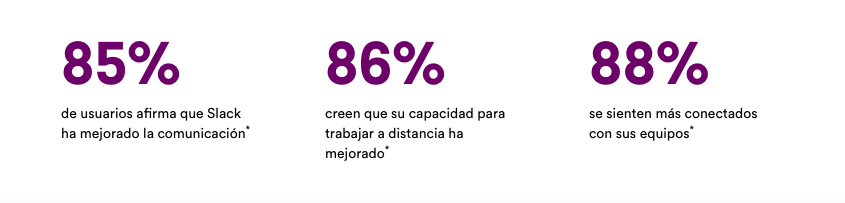

Un buen trabajo en equipo comienza con una sede digital
Reunir a todos tus compañeros, herramientas y comunicación en un mismo lugar te permitirá trabajar de manera más rápida y eficiente que nunca

Reunir a todos tus compañeros, herramientas y comunicación en un mismo lugar te permitirá trabajar de manera más rápida y eficiente que nunca
Los canales son el corazón de Slack. Son espacios organizados para todo el mundo que contienen todo lo necesario para trabajar. Los canales permiten conectarse entre departamentos, oficinas, zonas horarias e incluso con otras empresas.
Obtener mas información sobre los canalesSlack te otorga la flexibilidad para trabajar cuando, donde y como tú quieras. Puedes chatear, enviar clips de audio y vídeo o unirte a una junta para discutir asuntos en directo.
Obtener mas información acerca de la comunicación flexibleConectar tus otras aplicaciones de trabajo con Slack te permite ahorrar tiempo al no tener que cambiar entre pestañas. Además, con herramientas eficaces como el Creador de flujos de trabajo, puedes automatizar tareas rutinarias.
Obtener mas información sobre la plataforma de SlackSlack se adapta de forma segura para garantizar la colaboración en las empresas mas imporatantes del mundo
“Hemos podido crear una amplia red virtual de empleados que se pueden comunicar como si estuvieran juntos. Hubo bastantes problemas sobre dónde trabajábamos, pero no sobre el cómo”.
Mark Smith
Responsable técnico sénior de Productos, T-Mobile
* Promedio ponderado. Basado en una encuesta de 2707 respuestas de usuarios semanales de Slack en Estados Unidos, Reino Unido, Australia y Canadá, con un margen de error de ± 2 % al 95 % CI (diciembre de 2021).